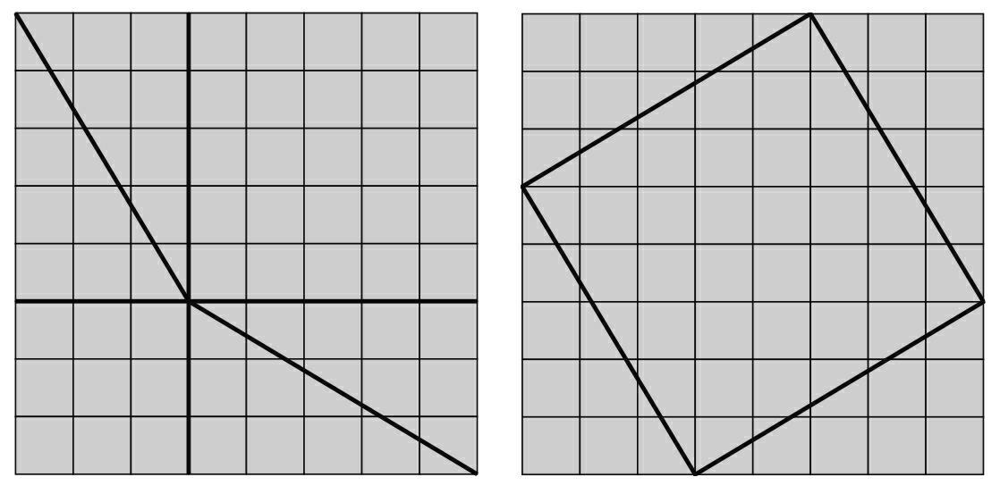
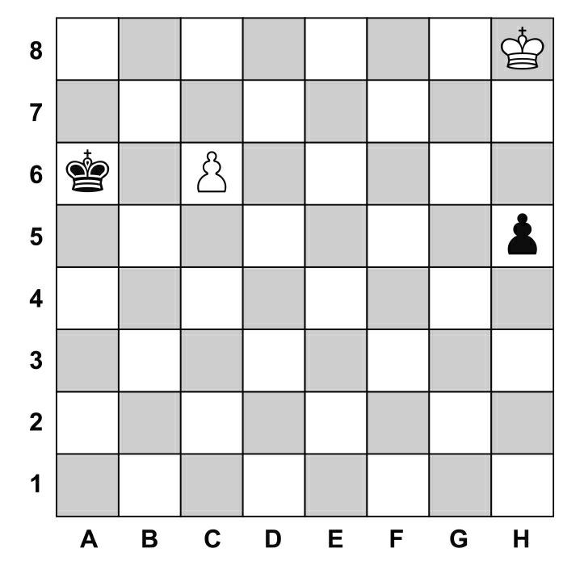
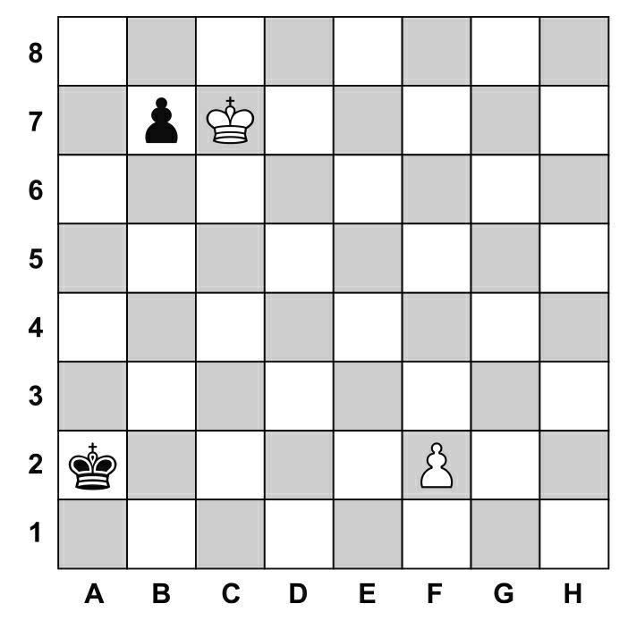

提到毕达哥拉斯，人们自然会想到他提出的著名公式a2+b2 =c2，随后便会想到几何学的相关知识。毕达哥拉斯定理(1)的证明方式比其他任何数学定理的证明方式都要多，其中最有名的一个证明方式来自第20任美国总统詹姆斯·艾伯拉姆·加菲尔德（James Abram Garfield）。
在这篇文章中，我们将以国际象棋棋盘为模型来证明毕达哥拉斯定理。借助这种证明方式，我们也可以聊一聊象棋棋盘中的奇怪的几何学知识。
使用这种证明方式证明毕达哥拉斯定理只需要在象棋棋盘中画几条线，如下图所示，将棋盘切割成几个不同的部分。

以上两张图上都出现了四个直角三角形，且所有的直角三角形都相等，只是放置在棋盘不同的位置上。为了让毕达哥拉斯定理更直观，我们去掉了原始棋盘上的黑白相间的小方块。
将直角三角形中最长的边（斜边）表示为c，其余两条直角边表示为a和b。左边的棋盘除掉四个三角形所占的面积，就是两个正方形，这两个正方形的面积总和为a2+b2。
在右边的棋盘中，四个直角三角形被放置在了棋盘的四角。除去四个直角三角形的面积，剩下的便是位于中间的一个大的正方形，这个正方形的面积就是c2。因为棋盘的大小是一致的，所以这个大的正方形的面积就是第一张图中两个小正方形的面积和。其他给定大小的或者随机大小的直角三角形都可以利用这个“棋盘证明法”证明毕达哥拉斯定理。
就这点而言，毕达哥拉斯定理在棋盘上行得通。
大家这时候也许会想，棋盘上的几何学问题似乎与理论上的几何学问题相同。但是事实上并非如此，棋盘上出现的几何学有它自己的独特之处。
如果我们将棋盘中任意两小块的间隔称为一步棋的最小间隔，比如国际象棋中的王一次只能走一格，但既可以横着走也可以斜着走，那么按照这种计算方式，整个棋盘的对角线（从A1到H8的距离，或者从A8到H1的距离，参考后面图中棋盘的分布）与棋盘的每一边（比如从A1到H1，或者从H1到H8）是一样长的，它们都是8个单位长，即王走7步便可以从一端走到另一端。
根据我们日常生活中使用的几何学知识，如果用长度单位厘米去测量正方形的斜边，我们会得出斜边的长度是直角边的几倍。下图最简洁且最准确地展示了象棋棋盘上具有与众不同的几何特点的象棋问题，这道题由匈牙利著名的国际象棋大师理查德·雷蒂（Richard Reti）于1921年提出：白方应如何走棋，才能使双方最终达成平局(2)的局面？
残局中白方的王处于一个非常不利的地位，黑方仿佛马上就要取得胜利，但是峰回路转，白方将局面扭转到了平局。这本身极其困难，要求棋手有很高的洞察力与运算水平。究竟如何走棋才能使双方平局呢？

黑方的王可以轻易地阻止白方“兵升变后”(3)——因为黑方的王离白方的兵距离很近，而白方的王却与黑方的兵距离较远，这意味着在白方追求升变的过程中黑棋可以更快速地吃掉白兵。而黑方的兵需要跨越四格才能到达H1（对方的边线），之后便可升变为后。此时一味地祈求运气是远远不够的，那么白方应该采取什么策略让白方棋子脱离险境呢？
其实大家都被表象欺骗了。正是因为在棋盘上的几何学知识与其他地方的不同，所以棋盘上的步数不能按照普通的计算方式计算。只要通过这个方法，白方的施救过程就可以取得成功：第一步，白方的王走向G7，黑方的兵走到H4；第二步，白方的王走到F6，此时，如果黑方选择将兵移动到H3的位置，白方的王就可以移动兵，让黑方的王吃不到己方的兵，并且帮助它抵达边线升变为新的后。之后的走法为：第三步，白方的王走到E7，黑方的兵走到H2；第四步，白方的兵走到C7，黑方的王走到B7；第五步，白方的兵走到D7。之后黑方和白方的两手棋各走一步，棋盘上就会出现两个新立的后，最终结果平局。
但是如果黑方在走第二步的时候将自己的王移动到了B6，白方继续走棋的模式是：第三步，白方的王走到E5，黑方的王在C6处吃掉白方的兵（或者黑方的兵向H3移动；第四步的时候白方的王走到D6，黑方的兵走到H2；第五步的时候白方的兵走到C7，黑方的王走到B7；第六步，白方的兵走到D7，之后仍会达到平局的局面）。如果黑方在第三步时用王吃掉了在C6的白方的兵，为了确保可以打成平局，白方的王会在下一步的时候攻击黑方的兵；第四步，白方的王走到F4，黑方的兵走到H3；第五步，白方的王走到G3，黑方的兵走到H2；第六步，白方的王走到H2吃掉黑方的兵，两方平局。无法解决的难题顺利解决了！
其实，白方想要在棋盘上不处于劣势，就要同时朝两个目标努力：其一，攻击黑方的兵；其二，支持己方的兵升变为后。而只有象棋棋盘上独特的几何原理才能让同时追求这两种目标成为可能。在国际象棋棋盘上，有拐角的路线H8—G7—F6—E5—F4—G3—H2与直走的路线H8—H7—H6—H5—H4—H3—H2是一样长的。也就是说，以连接H8、E5和H2形成的角为顶角的三角形中，三角形的两腰之和与底边（H8—H2）相等，按照这两种方式，王都需要6步才能走到H2。
虽然在生活中我们最常用的几何学知识是“两点之间线段最短”，两点之间任何非直线的连线都比线段要长。但是在象棋的世界里，在不相邻的两格之间不止有一条最短的线路，有时一条蜿蜒曲折的线路或者如上所述三角形的线路都是最短线路。
你还想再深入地研究一下棋盘上的几何学吗？下面这个由阿图尔·曼德勒（Artur Mandler）在1931年创造出来的象棋问题就非常适合你。
现在该白方下棋，而且白方能赢得比赛。接下来白方与黑方将如何走呢？

(1) 也称“勾股定理”。
(2) 国际象棋规则规定的获胜条件为将死对方的王，平局即不分胜负的局面。
(3) 在国际象棋中，只要一方走到对方底线就可以升变为除王以外的角色，而因为后的威力最大，所以一般升变时会升变为后。此处棋局中黑兵需要走到H1才能升变，同理，白兵需要走到C8才能升变。